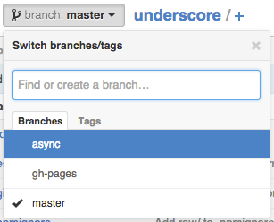

Description
This jQuery plugin attempts to emulate (and improve) the functionality of the select menu used in Github.com, the one that can be seen when switching branches for example, also seen when filtering issues:

Features:
- [x] Poup menu for selecting items similar to Github's
- [x] Make any element display a popup menu select on clicking it
- [x] Single or multiple select
- [x] Tabs
- [x] Search box
- [x] Clear selection button
- [x] Apply button (per tab)
- [ ] Plain links items
- [ ] HTML items